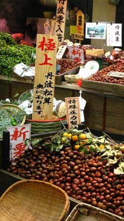

In Season: The Calendar of ShunWhen complete, this section will include a monthly calendar of the seasonal shifts of shun. There is no equivalent to the word shun in the English vocabulary, but it is a key concept in Japanese food culture. Shun is the exact moment when food is at its peak of flavor: when a vegetable is at its most delicious; fruit at its peak of fragrant sweetness and when mushrooms are at their most tasty. It is the time when various kinds of fish can be caught during their annual migration up and down Japan's coasts, and when they are at their most flavorful. Here we take a look at the Japanese growing season and feature foods at their shun. We'll feature fruit, vegetables and fish on a monthly basis, adding them to the calendar as we go. Kicking off this section, we start with the start of the Japanese calendar year: April. Read more about shun in the culture section. The Culture of RiceRice is so elemental to the soul of Japanese cooking that gohan, the word for rice, is synonymous with the word for meal. Indeed, the most basic meal consists of plain rice and soup, and the rest of the meal, okazu (things to go with rice) are considered to be added elements. Rice was used until modern times as currency, and is central to almost every Japanese festival and religious ceremony. Sake, which is made from rice, was thought to be a sacred liquid that had the ability to cleanse evil spirits. Sake has a close relationship with Shinto shrines, and the first brew from each region was, and still is, dedicated to the local Shinto shrine every year. Rice cultivation was also instrumental in developing Japan’s national character. Because its production is such a community effort (no one person could successfully manage it alone) cooperation and social unity were favored over individuality. And although modern Japan is light years away from its roots as a village farming society, these beliefs and qualities persist. Rice is considered so sacred that the emperor tends a small rice paddy within the grounds of the Imperial Palace, donning rubber boots to plant rice seedlings each June. |
|

|